Analysis
run_id: fedjev-2026-09-20 model: jev-1.13.0 (TypeSafe SystemOne) criterion (exact): more hawkish about inflation repository: maybern-tripp-smith/fedjev-bench pages: https://maybern-tripp-smith.github.io/fedjev-bench/
Companion gate tables: REPORT.md. Machine-readable estimates: results/gates.json. Estimator glossary: results/interpretation.json. FedLock matching and fidelity: results/fedlock_fidelity.md.
Abstract
Same-day changes in the federal funds target are a convenient but incomplete label for the hawkishness of Federal Open Market Committee (FOMC) communication. Policy actions and textual stance often co-move on scheduled action days. They need not coincide when the Committee leaves the target unchanged.
This note reports a pre-registered evaluation of TypeSafe/Jev on chair press-conference openings. The protocol is pairwise Choice under the fixed criterion string more hawkish about inflation, presented in both orders, aggregated by Bradley–Terry (BT), with a secondary direct Score pass. Seven gates examine construct validity on easy pairs, rank agreement with same-day target moves, separation of holds from cuts on the text axis, forward-path correlation, order and name stability, and external consistency with an independent text score (FedLock).
Primary quantities are reported with standard errors (STE) and, where applicable, bootstrap percentile confidence intervals. Gate 4 is a construct-validity result: when the target is unchanged, d_same is identically zero and cannot encode hawkish- versus dovish-hold language. Gate 7 is Spearman agreement with FedLock raw (m) and era-adjusted (ma) scores. It is not a TrueSkill or macro-conditioned methodological replication.
1. Introduction
Work on FOMC language often treats the realized same-day target-rate change as a proxy for how hawkish a communication was. That proxy mixes two constructs, defined once here and used throughout.
The behavioral measure is the Committee’s voted action. The series used below is d_same, the same-day change in the funds target (hike, hold, or cut), together with dissent counts where available.
The textual measure is the stance expressed in the Chair’s opening remarks about inflation, the labor market, and the policy path, recovered under a fixed pairwise criterion.
On scheduled action days the two series frequently align. On holds (d_same = 0), and across regimes—for example 2020 easing communications versus 2022–23 holds with hawkish inflation language—alignment is not guaranteed. The evaluation therefore asks three measurement questions.
First, under a fixed pairwise criterion, does the ranking recover obvious hawk-versus-dove document orderings? Second, on scheduled action days, does it agree in rank with d_same? Third, on the text axis, do holds sit above cuts—as would be expected if same-day funds-rate changes are an incomplete label for textual hawkishness when the target is unchanged?
Gates were registered before any Jev output. Pass/fail applies to Gates 1, 3, 4, and 6. Gates 2, 5, and 7 are report-only or secondary.
The note is a measurement exercise. It does not identify a causal effect of communication on rates, markets, or subsequent policy.
2. Related work
| Work | Contribution | Use in this evaluation |
|---|---|---|
| jsort (keltokhy/jsort) | Statement ranking; published Spearman versus same-day move ≈ +0.46 | Label formulas (d_same, d_90, d_2y); Gate 3 signal line (+0.30) and published reference (+0.46) |
| Shah et al. (gtfintechlab/fomc-hawkish-dovish; CC BY-NC 4.0) | Sentence-level hawk/dove/neutral labels | Stratum B; Gate 2 report-only |
| FedLock (jnathan9.github.io/fedlock) | Independent LLM pairwise tournament with TrueSkill scores | Gate 7 external consistency (report-only); see §6 |
jsort supplies the behavioral-label algebra and a published rank-correlation reference. Shah supplies sentence gold for a stress test that is not used to pass or fail the document-level claim. FedLock supplies an independent meeting-day text score. None of these sources is treated as a ground-truth hawkishness index.
3. Data
| Corpus | Path | Role |
|---|---|---|
| Chair press-conference openings | data/clean/statements.jsonl (~95 documents) | Document-level Choice and Score |
| Shah sentences | data/clean/sentences.jsonl | Stratum B |
| Meeting calendar and FRED labels | data/labels/meetings.parquet | d_same, d_90, d_2y, dissent counts, exclusions |
| FedLock snapshot | data/raw/fedlock/data.json | Gate 7 (m, ma, s, st) |
| FRED CSVs | data/raw/fred/ | DFEDTARU, DGS2 |
Labels (jsort-aligned). d_same = DFEDTARU[t+1] − DFEDTARU[t−1]. y_action = sign(d_same). d_90 = DFEDTARU[t+90] − DFEDTARU[t]. d_2y = DGS2[t] − DGS2[t−1].
Exclusions (pre-registered). Drop 2020-03-03 and 2020-03-15 (unscheduled) and other exclude_main or unscheduled rows from the main analysis. Flag 2023-03-22 (SVB) without dropping.
Gold strata (frozen before scoring). A, extreme document pairs, n=40. B, Shah hawk versus dove sentences, n=200, seed 20260920. C, adjacent scheduled meetings with nonzero change in d_same, n=22. Manifest: data/pairs/PAIR_MANIFEST.md.
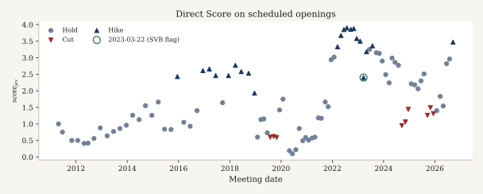
score_jev) on scheduled openings in the main sample (crisis dates dropped; n=93). Marker shape is the same-day action: hike, hold, or cut. The teal circle marks 2023-03-22 (SVB), which is flagged and retained. Holds sit at a wide range of text scores even though d_same is zero.4. Measurement
Choice (primary). Criterion string: more hawkish about inflation. Each gold pair is presented in both orders (ab and ba). Choice probabilities are mapped to the gold side and averaged. An inversion is an averaged winner that does not match gold. Chair names and ISO dates are stripped (scripts/strip_meta.py).
Score (secondary). A five-level ordinal rating is mapped to a continuous score_jev for each opening.
Bradley–Terry. BT scores use Strata A and C Choice probabilities. Shah pairs are excluded because they are sentence-level. This run: n_statements=48, n_comparisons=124, converged=True, position bias γ=-0.1378. The comparison graph is sparse. The BT se in statement_scores.csv is fit uncertainty from the pairwise likelihood, not a meeting-sampling STE.
Uncertainty. Spearman: bootstrap STE (standard deviation of 1,000 meeting resamples) and percentile 95 percent confidence interval. Inversion: binomial STE √[p(1−p)/n]. Means and Brier scores: STE = sd/√n. Gate 4 gap STE = √(ste_holds² + ste_cuts²).
5. Pre-registered gates and results
| # | Gate | Pass line | Result |
|---|---|---|---|
| 1 | Easy-pair inversion (A) | ≤ 0.05 | PASS — rate=0.0000 (n=40, STE=0.0000) |
| 2 | Sentence discrimination (B) | report | inv=0.1900 STE=0.0277; Brier=0.1384 STE=0.0156 (n=200) |
| 3 | Action ranking | Spearman ≥ +0.30 | PASS — BT all=+0.623 (n=46, STE=0.096) [+0.398, +0.787]; action=+0.851 (n=24, STE=0.074) [+0.652, +0.937] |
| 4 | Holds versus cuts | mean(holds) > mean(cuts) | PASS — BT gap=+0.519 STE=0.368 (n_h=22, n_c=8) |
| 5 | Forward path (d_90) | secondary | BT=+0.357 (n=44, STE=0.154) [+0.042, +0.627]; score_jev=+0.511 (n=91, STE=0.081) [+0.336, +0.652] |
| 6 | Order/name stability | Δ inv ≤ 0.05 | PASS — Δ=0.0000 |
| 7 | FedLock consistency | report | BT vs m=+0.679 (n=46, STE=0.112) [+0.436, +0.861]; vs ma=+0.594 (n=46, STE=0.104) [+0.361, +0.770]; score_jev vs m=+0.944 (n=90, STE=0.016) [+0.900, +0.966]; vs ma=+0.774 (n=90, STE=0.044) [+0.673, +0.839] |
5.1 Inversion by stratum
| Stratum | n | inverted | inversion (STE) | mean p(gold) | mean Brier (STE) | order-flip |
|---|---|---|---|---|---|---|
| A extreme | 40 | 0 | 0.000 (0.000) | 1.000 | 0.000 (0.000) | 0.000 |
| B Shah | 200 | 38 | 0.190 (0.028) | 0.745 | 0.138 (0.016) | 0.105 |
| C adjacent | 22 | 1 | 0.045 (0.044) | 0.855 | 0.046 (0.018) | 0.091 |
Stratum A has no inversions. The inverted adjacent pair is C018. Gate 2 (19 percent inversion) is a sentence-level stress test. It is not a pass/fail of the document-level claim.
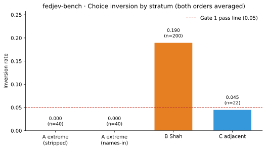
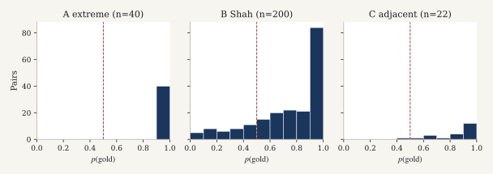
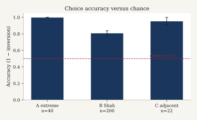
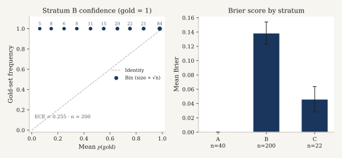
5.2 Gate 3 — rank agreement with policy actions
| Slice | BT Spearman ρ [STE; 95% CI] | n |
|---|---|---|
| All scheduled (excl. crisis) | +0.623 (n=46, STE=0.096) [+0.398, +0.787] | 46 |
action_days (d_same≠0) | +0.851 (n=24, STE=0.074) [+0.652, +0.937] | 24 |
| hold_days vs (n_hawk−n_dove) | −0.192 (n=22, STE=0.202) [−0.513, +0.274] | 22 |
hold_days vs d_2y | −0.135 (n=22, STE=0.244) [−0.594, +0.349] | 22 |
Secondary score_jev: all=+0.589 (n=93, STE=0.063) [+0.460, +0.701]; action=+0.918 (n=30, STE=0.033) [+0.812, +0.953].
Action-day ρ exceeds all-scheduled ρ because holds contribute no variation in d_same. Spearman versus d_same on holds alone is undefined and is not computed. Hold-day associations with net dissents and d_2y are weak. That pattern is consistent with holds mixing hawkish-hold and dovish-hold communications.
The jsort published reference is Spearman ≈ +0.46 (STE not re-estimated here). BT action-day ρ=+0.851 (STE=0.074) exceeds both the pre-registered +0.30 line and that published point estimate. Bootstrap intervals on the action-day and all-scheduled slices exclude zero.
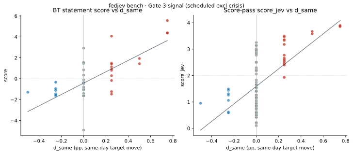
d_same on scheduled meetings excluding unscheduled crisis dates. Left: Bradley–Terry (n=46). Right: score_jev (n=93). Triangles are action days; circles are holds (d_same = 0). The teal outline is 2023-03-22 (SVB). Spearman ρ and bootstrap STE are the Gate 3 all-scheduled estimates. Holds form a vertical stack because the behavioral label does not vary.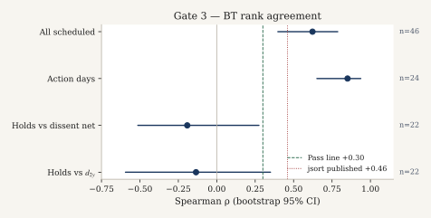
d_2y have intervals that include zero. Vertical lines mark the pre-registered +0.30 pass line and the jsort published point estimate +0.46.5.3 Gate 4 — holds versus cuts on the text axis
| Score | mean holds (STE, n) | mean cuts (STE, n) | mean hikes (STE, n) | gap holds−cuts (STE) |
|---|---|---|---|---|
| BT | −0.720 (0.335, 22) | −1.239 (0.153, 8) | 1.827 (0.532, 16) | +0.519 (0.368) |
| score_jev | 1.457 (0.114, 63) | 1.036 (0.122, 9) | 3.067 (0.135, 21) | +0.421 (0.167) |
Under holds, d_same is identically zero. It therefore cannot encode hawkish- versus dovish-hold communications. A higher mean text score on holds than on cuts indicates that the textual measure separates these regimes where the same-day behavioral label cannot.
This is a construct-validity result: same-day funds-rate changes are an incomplete label for textual hawkishness when the target is unchanged. It is not a claim that text overrides the voted action, nor a judgment of policy correctness.
The BT gap 95 percent interval includes zero ([−0.202, +1.239]). The score_jev gap interval does not ([+0.094, +0.749]). The pre-registered pass rule is the point comparison mean(holds) > mean(cuts).
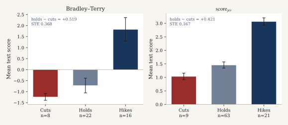
score_jev: cuts 1.036 (STE 0.122, n=9); holds 1.457 (STE 0.114, n=63); hikes 3.067 (STE 0.135, n=21); gap +0.421 (STE 0.167). Holds sit above cuts on both scales.5.5 Gate 5 — forward path
BT versus d_90: +0.357 (n=44, STE=0.154) [+0.042, +0.627]. score_jev versus d_90: +0.511 (n=91, STE=0.081) [+0.336, +0.652]. The gate is secondary.
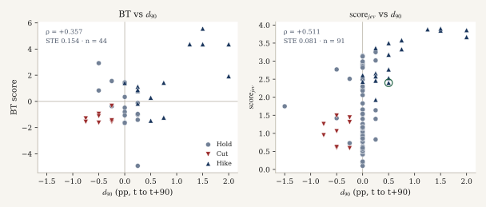
d_90). Markers follow the same-day action, not the forward path. Left: BT, n=44. Right: score_jev, n=91. Spearman ρ and bootstrap STE are the Gate 5 estimates. Intervals exclude zero on both slices.5.4 Gate 6 — name ablation
Baseline inversion (names stripped) = 0.0000. Names left in = 0.0000. Δ = 0.0000 ≤ 0.05 (PASS). Add-on cost $0.010955 (80 calls).
Openings rarely embed Chair names or ISO dates that the stripper can remove. The zero delta is therefore more informative about order stability than about name confounding.
6. Relationship to FedLock
Full note: results/fedlock_fidelity.md.
FedLock V3 (methodology) is a pairwise tournament with Llama 3.3 70B on anonymized speeches. The judge prompt includes macro context (core PCE, unemployment, GDP growth, VIX). Scores are aggregated by TrueSkill (μ₀=50, σ₀≈8.33, target σ<2) over roughly 60,000 comparisons and 4,000 speeches. Published fields include m (raw μ), ma (era-adjusted), s (σ), n, and st.
Shared with this evaluation. Pairwise textual hawkishness as the object of measurement. Name and meta stripping on the Jev Choice calls. Use of FedLock press_conference scores as an external consistency check.
Not reproduced. Macro-conditioned judge prompts. TrueSkill. Era adjustment as the Gate 7 primary (ma is reported as a sensitivity). The full speech corpus. The Llama judge. Swiss or uncertainty-targeted matching.
Gate 7 ρ is therefore agreement between two independent text-scoring systems on meeting-day hawkishness. It is not a methodological replication of FedLock.
Matching. Prefer the meeting date embedded in the FedLock title; otherwise the FedLock d field with deltas 0, +1, −1, +2. Matched meetings=92; main-analysis matched=90; same-calendar-day on the d field=1; delta distribution={'0': 1, '1': 89}; match-via={'title_date': 90}; mean FedLock s on the matched main set=1.7762.
| Contrast | ρ | STE | n | 95% CI |
|---|---|---|---|---|
BT vs m | +0.679 | 0.112 | 46 | [+0.436, +0.861] |
BT vs ma | +0.594 | 0.104 | 46 | [+0.361, +0.770] |
score_jev vs m | +0.944 | 0.016 | 90 | [+0.900, +0.966] |
score_jev vs ma | +0.774 | 0.044 | 90 | [+0.673, +0.839] |
Agreement with raw m is stronger than with era-adjusted ma, especially for score_jev. The corpora differ: chair openings are not necessarily full FedLock press-conference transcripts.
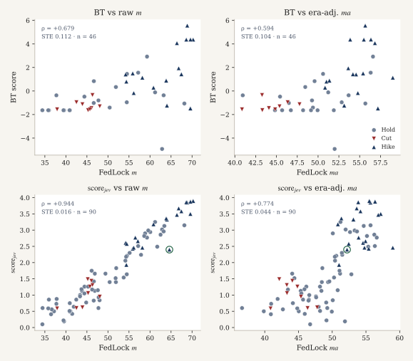
press_conference scores, main-analysis match (title date preferred). Top: BT versus raw m and era-adjusted ma (n=46). Bottom: score_jev versus m and ma (n=90). Markers are same-day actions. ρ and bootstrap STE match Gate 7. The teal outline is 2023-03-22. This is agreement with an independent text score, not a TrueSkill or macro-conditioned replication.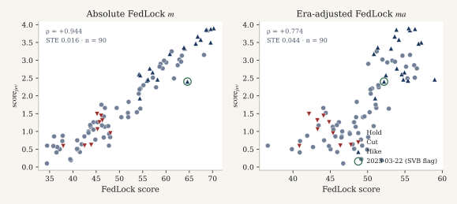
score_jev series against FedLock raw m (left; ρ=+0.944, STE=0.016, n=90) and era-adjusted ma (right; ρ=+0.774, STE=0.044, n=90). The raw contrast is near a rank ceiling. Experiment 7 (a separate macro-relative scoring design) is not in the repository; the panel uses the Gate 7 series that are.7. How to read the estimates
| Quantity | Meaning in this note |
|---|---|
Spearman ρ vs d_same | Rank agreement between meeting-level text hawkishness and the same-day target move |
| Why action-day ρ exceeds all-scheduled ρ | Holds add no d_same variation and dilute the pooled correlation |
Hold-day ρ vs d_same | Undefined; not computed (d_same is constant 0) |
| Gate 4 gap | Mean text score(holds) − mean text score(cuts) |
| Inversion 0 on Stratum A | Averaged two-order winner matched gold on easy pairs. Does not imply calibration on hard pairs or policy forecasting |
BT se | Uncertainty from the pairwise BT likelihood, not a bootstrap over meetings |
| Haiku versus Jev | Winner agreement (inversion) is the accuracy comparison. Listed USD and per-call latency are separate axes |
| STE | Standard error as defined in §4 for each estimator family |
8. Implementation cost and latency
List price for jev-1.13.0 in this run: $0.042 per million input tokens; output free. Main run ≈ $0.03120 (619 calls; 524 Choice + 95 Score). Name-ablation add-on ≈ $0.011. Grand total ≈ $0.042. Mean per-call latency ≈ 214 ms at concurrency 6. Approximate wall time under perfect parallelism is sum/6 (~22 s). See results/cost.json and results/timing.json.
Same-protocol Choice comparison (Claude Haiku 4.5)
| Jev 1.13.0 | Haiku 4.5 | |
|---|---|---|
| Stratum A / C inversion | 0.000 / 0.045 | 0.000 / 0.045 |
| Stratum B inversion | 0.190 | 0.170 |
| Choice USD | ≈ $0.024 | ≈ $0.636 (~27×) |
| Mean latency | ≈ 207 ms | ≈ 676 ms (~3.3×) |
On Strata A and C the inversion rates are identical. On Shah, Haiku inversion is 0.170 versus 0.190 for Jev, with a higher Haiku order-flip rate (0.24 versus 0.105). Winner agreement is the primary accuracy comparison. Listed cost and latency are reported separately and are not used as gate criteria.
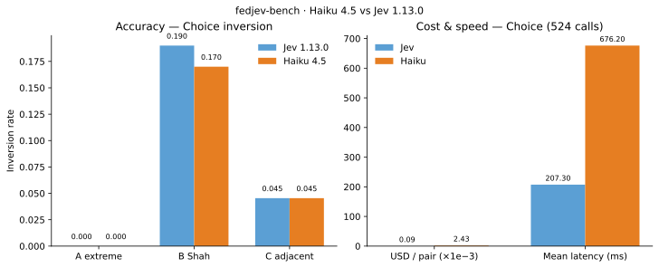
9. Interpretation and limitations
Construct validity (Gate 1). Zero inversion on Stratum A indicates that, under the fixed criterion and dual-order protocol, the ranking recovers obvious hawk-versus-dove document orderings.
Rank agreement on action days (Gate 3). BT ranks track d_same on scheduled action days above the pre-registered +0.30 line and above the jsort +0.46 published point estimate. Bootstrap intervals exclude zero. This is rank agreement with a behavioral label, not identification of a policy-rule residual.
Incomplete behavioral labels under holds (Gate 4). When the target is unchanged, d_same cannot distinguish hawkish-hold from dovish-hold text. Higher mean text scores on holds than on cuts are informative about the textual construct where the behavioral label is uninformative. Same-day funds-rate changes are therefore an incomplete label for textual hawkishness under holds.
External consistency (Gate 7). Jev scores agree with an independent FedLock text score, more so for the Score pass versus raw m than versus era-adjusted ma. Combined with the fidelity statement in §6, this is agreement between two text measures. It is not a TrueSkill or macro-conditioned replication.
Limitations. The BT graph is sparse (48 statements, 124 comparisons). The dissent scrape is incomplete, so hold-day dissent correlations are noisy. Chair openings are not full press conferences. The evaluation uses a single criterion string and a single model version. The Gate 4 BT gap interval includes zero. Follow-on designs listed in §11 are not estimated in this run.
10. Reproducibility
git clone https://github.com/maybern-tripp-smith/fedjev-bench
cd fedjev-bench
python -m venv .venv && source .venv/bin/activate
pip install typesafe-sdk pandas pyarrow openpyxl scipy matplotlib
export TYPESAFE_API_KEY=... # never commit
python score.py --live --full
python scripts/run_name_ablation.py --live
python scripts/analyze_gates.py
python scripts/plot_figures.pyFrozen inputs: data/pairs/gold_pairs.jsonl, data/clean/, data/labels/. Outputs: results/, runs/jev/. Cached answers under runs/jev/ permit offline re-analysis via python scripts/analyze_gates.py. Figures: python scripts/plot_figures.py writes SVG/PNG to results/figures/ and docs/figures/.
11. Reserved follow-on experiments
results/experiments/FINDINGS.md and experiment JSON are not present in this repository. Experiments 3–7 were not run as separate designs in fedjev-2026-09-20. No composite, Nouls, paraphrase, or span-Choice series exist to plot. Where a main-protocol series answers the same graphical question, the figure is cross-referenced and the limitation is stated.
Experiment 3 — Composite Scores. No composite score and no ablation Δρ vector are in the repository. No figure.
Experiment 4 — Multi-label Nouls. No Nouls labels or era-mean Nouls series are in the repository. 2023-03-22 is marked on Figures 1, 6, 9, 10, and 11 as a flagged meeting, not as a Nouls estimate.
Experiment 5 — Calibration. Figure 5 is the only calibration-relevant plot that can be drawn from results/pair_judgments.jsonl: a gold-frequency confidence diagram (ECE 0.255 on Shah, n=200) and Brier ± STE. A classical reliability curve versus an independent outcome is not identified, because inversion is a function of the same p. A paraphrase |Δp| series is not present.
Experiment 6 — Span Choice. No span-level Choice file is in the repository. Figures 3 and 4 show document- and sentence-level p(gold) and accuracy versus chance from the main gold pairs, not from a span protocol.
Experiment 7 — Macro-relative scoring. Figure 11 is Gate 7 absolute (m) versus era-adjusted (ma) agreement. That is the only absolute-versus-macro contrast in the files. It is not a macro-conditioned re-implementation of FedLock. The score_jev–m rank correlation (+0.944, STE 0.016, n=90) is near a ceiling.
These designs remain distinct from the pre-registered gates.
12. Licenses
| Asset | Status |
|---|---|
| Code | MIT |
| FOMC openings | U.S. government works; cite federalreserve.gov; no Federal Reserve endorsement |
| FRED | St. Louis Fed terms |
| Shah | CC BY-NC 4.0 — attribution; non-commercial; full dump not vendored |
| jsort | MIT |
| FedLock | Upstream site terms; snapshot for Gate 7 only |
Research instrumentation only. Not investment advice.
Citation
See CITATION.
FedLock-faithful TrueSkill replication
A separate protocol replication (anonymized pairwise judgments with macro context and TrueSkill) compares Jev, Haiku, and published FedLock scores. See results/fedlock_replica/FINDINGS.md.